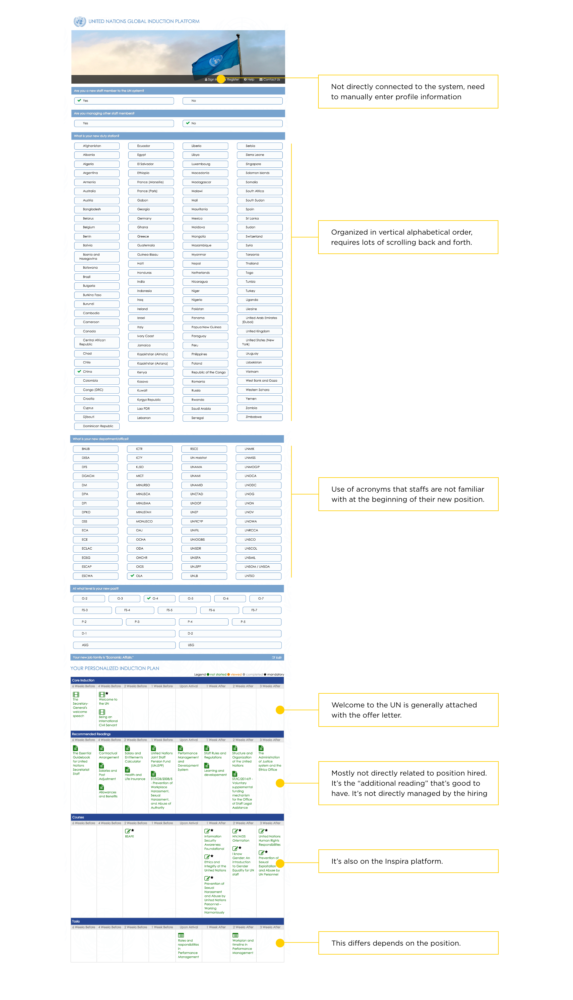
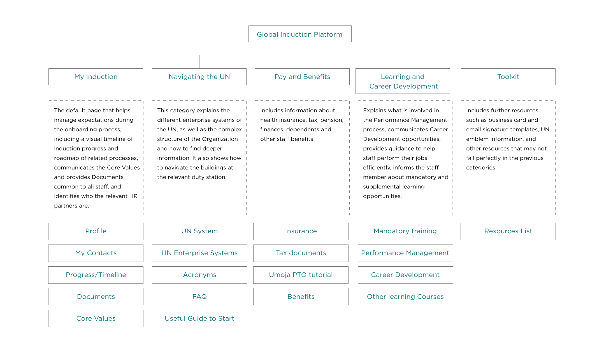
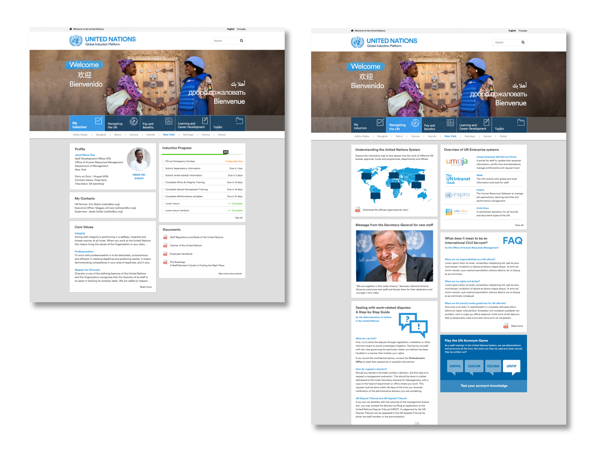
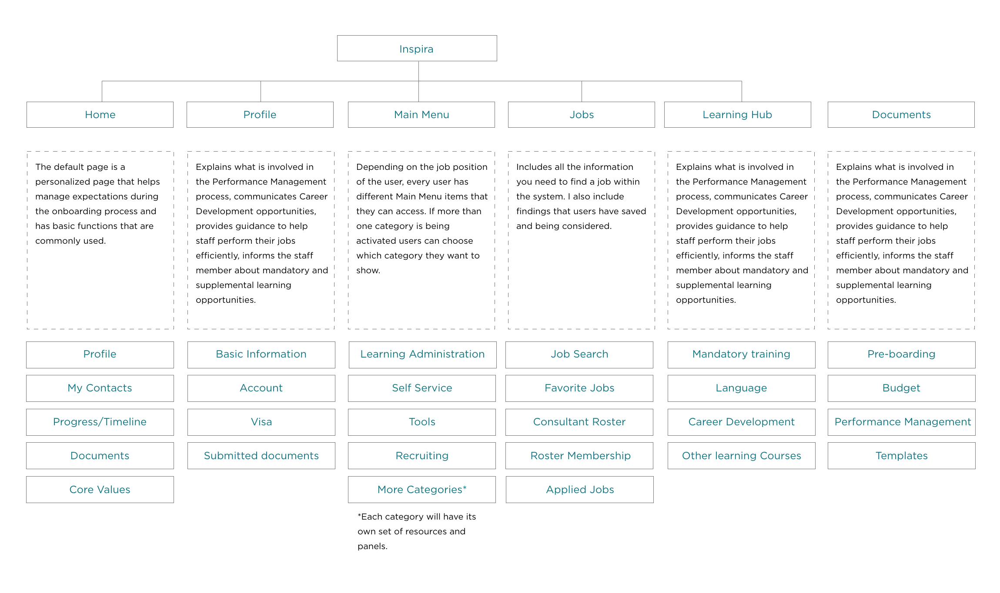
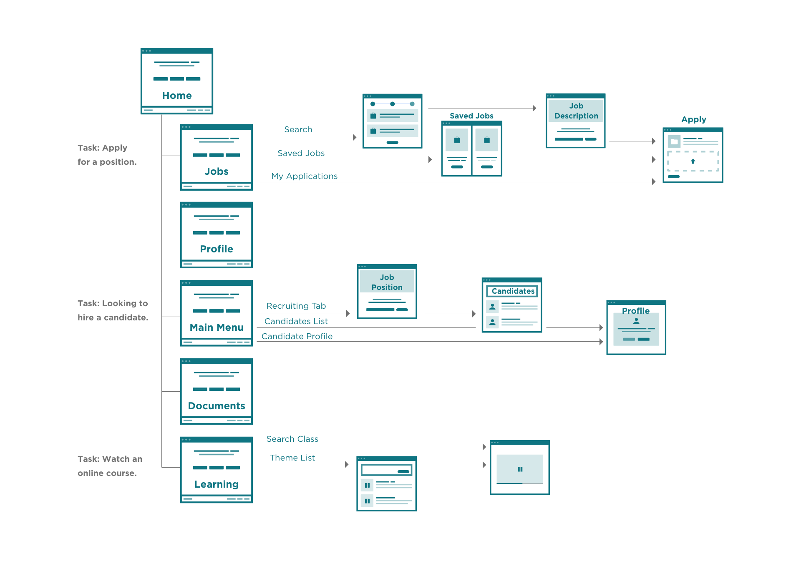
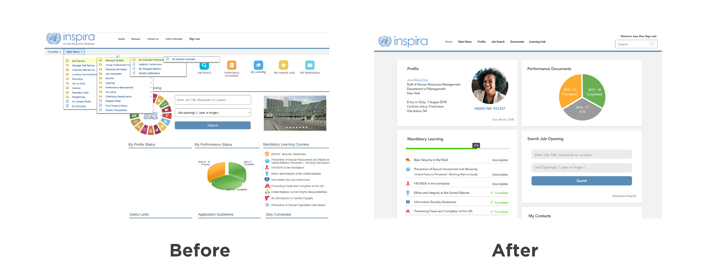
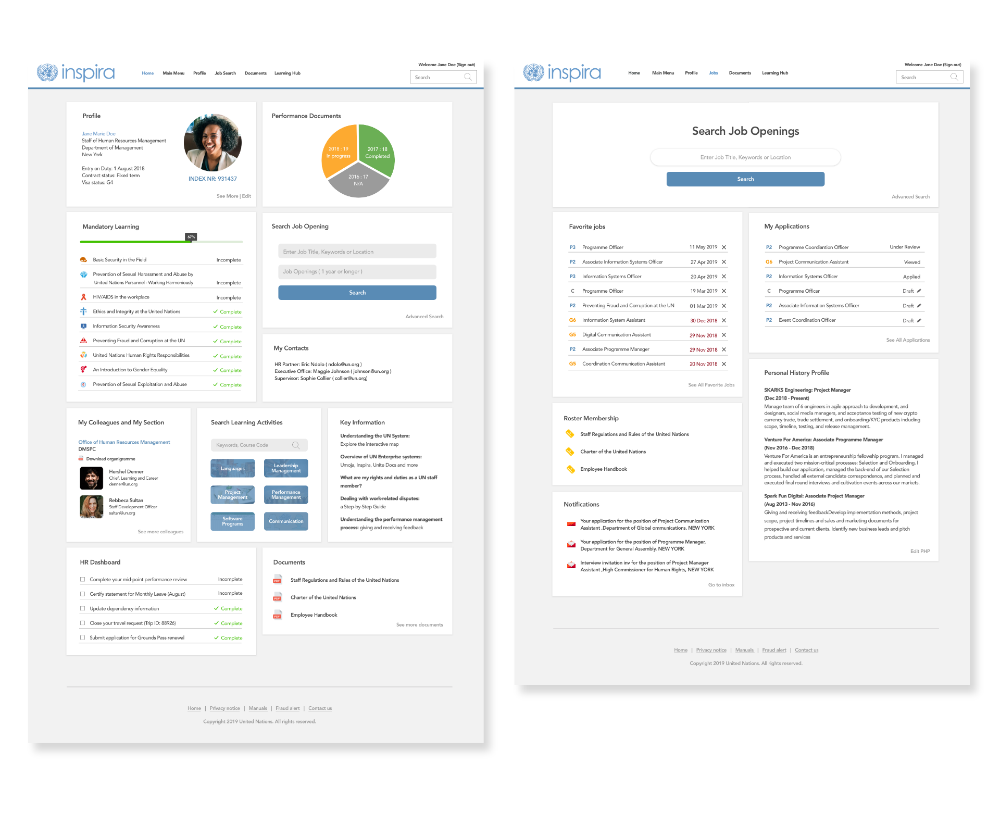

introduction
Global Induction Platform
Role UX/UI Design Team DMSPC Cross-Cutting Innovation and Tecnology Year 2018-2019
SUMMARY
I helped improve the onboarding experience for new and transfer staff members.
KEY CHALLENGES
Simplification,
Diversity,
Dealing with conflicts ,
DESIGN PROBLEM
How might we proviod guidance around the uncertainties to improve the on boarding experience of new and transitioning staff members?
As part of ongoing efforts to improve the onboarding experience of new and transferring UN staff, the Office of Human Resources - Department of Management, Strategy, Policy, and Compliance (DMSPC) seeks to redevelop the Global Induction Platform (GIP).
The 2017-2018 Onboarding Assessment Report exposed concerns that negatively affect staff morale, performance and impact on the mandate of the Organization.
OUR SOLUTION
Incorporate new function in existing United Nations platform.
New staff members are overwhelmed with new information and platforms within the United Nations' system. So instead of creating another new platform, we visioned a new induction function and a better user interface within the Inspira platform.
📋
OBJECTIVES
Ensure all improvements are relevant to all UN Staffs
Phase 1
Provide a clear and visually appealing graphical overview of the status of the onboarding process.
Phase 2
Boost staff member morale by making them feel welcome and remove the unknown elements surrounding their first days, by introducing the Organization and the new work environment.
Phase 3
Make sure that new staff members understand what is expected of them, what the key priorities are and how they can be successful.
🔎
User Research
Consisted 2 analyses: an exploratory analysis and a confirmatory analysis.
Massive and diverse sample
Staff that joined or internally transferred between May 2017 and May 2018 were invited to share their feedback. The data was separated into the different groups depending on whether this was their first appointment with the Organization and whether they had to switch locations for their new job. Overall, the survey provided feedback from a very diverse group of almost 1000 staff members from 62 countries in over 100 separate locations. Additionally, the surveyed group covered most Secretariat departments and field missions, had equal gender representation, had equal representation of supervisory roles, and included staff of all categories up to the ASG level.
The outcome
• How to use UN enterprise platforms such as Umoja, Inspira, or iSeek (concerned 97%) (big concern 87%)
• Knowing when my paperwork has been processed (concerned 95%) ( big concern 75%)
• Lacking an overview of what I should expect during the on boarding process (concerned 92%) ( big concern67%)
• Knowing what paper work I need to fill out. (concerned 88%) ( big concern 62%)
🖥
Evaluate, Ideate, and Flow
Not every project have to be an new innovation.
Current Platform
Information Architecture
After brainstorming with user pain-points and needs, we categorize the website into 5 sections. Taking the approach to personalizing the pages for each user.
 🚀
Realization and Possible Solution
Show others our vison.
Conflicts
Inspira Platform has already hosted more than 70% of the content and having similar functions we are designing, BUT Inspira is poorly designed and structured!
Inspira is the UN platform that supports Talent Management, which includes but not limiting to hiring, job searching, career development courses, annual performance report etc.
New Information Architecture
Flow Chart
Outcome
 🎓
LEARNINGS
Doing research with limited access.
The Inspira platform already has its own personalized system for different users. I reach out to different team members and this a great opportunity for me to build networks within the UN system and have a better understanding of what each user’s pain point when using the Inspira platform.
How to ask for support in the time of need.
Communication is one of the most important key on a successful project. Within the area of communication, seeking for help and clearly understand the expectation are two undervalued components to create a harmonize team environment. I learned how to seek help to get and give constructive feedback and support to be on the same page with peers and reporting officers.